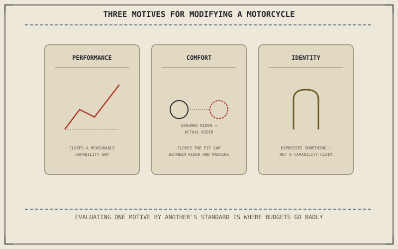

Part XII equipped a rider to act on a diagnosis. This part asks a different kind of question — not what's broken, but what a rider might deliberately choose to change on a motorcycle that isn't broken at all. Modifications answer three genuinely different underlying motives, and the chapters ahead evaluate each honestly rather than pretending every modification is secretly about the same thing.
Chapter 12.5 closed Part XII by turning toward exactly this question: not what's broken, but what a rider might deliberately choose to change, and whether that change is actually worth making. This chapter opens with why riders want to change anything at all.
Performance: Chasing a Measurable Gap
Some modifications exist to close a real, measurable gap between what a stock motorcycle does and what a specific rider actually needs from it — a track rider running out of cornering clearance before the tyre's grip limit, or braking capacity that fades under repeated hard use a street-tuned system was never designed to sustain lap after lap. This is the most straightforward motive to evaluate, because it produces a testable claim: does the modification actually close the specific gap it was bought to close, measured against the machine's stock behavior rather than a general reputation the part carries.
Comfort: Closing the Gap Between Rider and Machine
Chapter 1.1 argued that a rider isn't using a motorcycle so much as completing it, and a stock motorcycle is built around an assumed rider — a specific height, reach, and weight range that any individual rider may or may not actually fall within. A modification aimed at comfort closes that gap directly: adjusted bar height, peg position, or seat shape brings the machine's assumed rider closer to the actual one sitting on it, rather than adding capability the stock machine lacked.
Performance modifications close a measurable gap in capability; comfort modifications close the gap between an assumed rider and the actual one; identity modifications answer a question that was never about capability at all — and mistaking one motive for another is where a lot of modification budgets get spent badly.

A diagram showing three distinct motives for modifying a motorcycle: performance, closing a measurable capability gap; comfort, closing the gap between an assumed rider and the actual one; and identity, expressing something the machine communicates rather than does.
Identity: The Modification as Expression, Not Function
Chapter 1.1 also named a third reason people ride at all, separate from efficiency or cost: the nature of the control itself, and the relationship to the machine that comes from it. Some modifications extend directly from that same motive — paint, sound, or styling changes that express something about the rider rather than measurably improving braking, handling, or comfort. This is a legitimate motive, not a lesser one, but it's a different question entirely from whether a part "works," and evaluating an identity-driven modification by a performance-driven standard, or the reverse, is where honest evaluation usually breaks down first.
A Common Misconception, Cleared Up Early
It's a common habit to justify every modification in performance terms, even ones genuinely motivated by comfort or identity, as though only a measurable capability gain counts as a legitimate reason to spend money on a motorcycle. A rider who actually wants a certain exhaust note, or a certain look, but instead talks themselves into a performance justification that doesn't really hold up, ends up evaluating the purchase by the wrong standard afterward — disappointed by a horsepower gain that was never really the point. Naming the actual motive honestly, before buying anything, is what the rest of this part depends on.
Where This Leads
Chapter 13.2 turns to the single most commonly modified component on any motorcycle — the exhaust system — as the first case study in evaluating a specific modification against the motive actually driving it.
Key Concepts to Remember
- Performance modifications close a measurable gap in capability, testable against the machine's stock behavior.
- Comfort modifications close the gap between a stock motorcycle's assumed rider and the actual rider on it.
- Identity-driven modifications are a legitimate motive on their own, and evaluating them by a performance standard is a common source of disappointment.
Cross-References
| ← Ch. 1.1 | Established the rider as completing the machine and named the personal, non-spreadsheet reason people ride; this chapter traces comfort and identity modifications back to both. |
| ← Ch. 12.5 | Closed Part XII by turning toward what a rider might deliberately choose to change; this chapter opens Part XIII by naming why riders want to change anything at all. |
| → Ch. 13.2 | Covers exhaust systems as the first case study in evaluating a specific modification. |